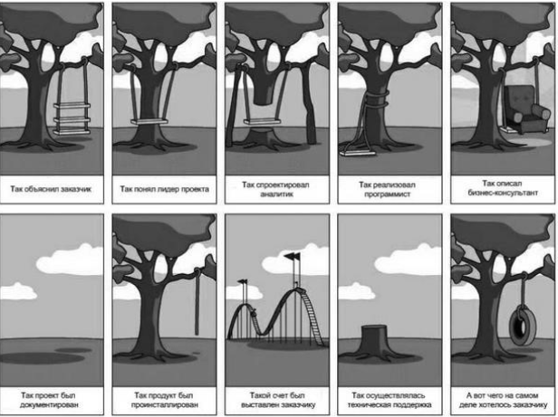

Лекция. Что такое The UML
Способы использования языка
Румбах присоединился к Бучу в Rational Inc. Они объединили свои нотации и создали первую версию UML. В 1995 году на конференции OOPSLA они представили его как Unified Method, который потом и получил название UML. позже к ним присоединился Якобсон, который добавил к результатам их труда элементы Objectory и начал работу над Rational Unified Process (RUP). В 1997 году UML был отправлен в Object Management Group (OMG) для стандартизации. Кроме трех нотаций "трех амиго" UML вобрал в себя элементы многих других методологий. Начать хотелось бы с демонстрации известной картинки, которая уже более двух десятилетий "живет" в Интернете, но источник ее никому не известен (если кто-то из читателей сможет пролить свет на ее происхождение, автор будет очень благодарен за информацию). Эта картинка прекрасно иллюстрирует типичный процесс создания продукта, или "решения" (поскольку продукт решает проблему заказчика), как любят говорить в Microsoft.
рис.1авторы UML определяют его как графический язык моделирования общего назначения (т. е. его можно применять для проектирования чего угодно - от простой качели, как на рисунке, до сложного аппаратно-программного комплекса или даже космического корабля), предназначенный для спецификации, визуализации, проектирования и документирования всех артефактов, создаваемых в ходе разработки.
Итак, UML в первую очередь - это спецификации. Заглянем снова в глоссарий и обнаружим, что
Спецификация- подробное описание системы, которое полностью определяет ее цель и функциональные возможности. Различают:
Как уже говорилось выше, различают спецификации трех видов. Словесные спецификации на естественном языке как раз и вызывают массу проблем, поскольку создаются разными специалистами на "их языке". Другим видом спецификаций являются формальные спецификации. Формальная спецификация является, по сути, математической моделью задачи и потому для вычислительных задач все выглядит достаточно просто. Формализация же задач из других областей знаний может оказаться более сложной и трудоемкой проблемой, чем разработка самого приложения ввиду отсутствия четкой математической модели. Один из принципов прикладной "мерфологии" гласит, что лучшей спецификацией программы является ее текст. Так же, как и большинство остальных законов Мерфи, это утверждение просто поражает своей правдивостью...
Когда мы говорим о том, что UML - это средство визуализации, мы имеем в виду модельные спецификации. Все мы знаем, как иногда трудно заставить себя "вникнуть" в суть материала, излагаемого в очередном учебнике или мануале. Изучение чего-то нового идет гораздо проще, если документ содержит не только текст, а еще и иллюстрации к нему. UML позволяет создавать такие простые и понятные картинки (модели), описывающие систему с разных сторон, которые можно показать заказчику и обсудить с ним, т. е. служит средством коммуникации в команде.
рис.2UML позволяет строить модели программных систем (вообще говоря - ЛЮБЫХ систем). По этим моделям потом может производиться генерация каркасного кода проектируемых приложений. Более того, возможен процесс, который часто называют "реверс-инжинирингом", - т. е. создание UML-модели из существующего кода приложения.
По большому счету, UML-модели сами по себе уже являются документами (и весьма понятными, даже для неспециалиста, как мы уже могли убедиться, посмотрев на предыдущий рисунок; кроме этого, как мы еще упомянем далее, модели UML являются XML-документами). Причем любой элемент на любой диаграмме может быть снабжен ноутсом - текстовым комментарием. Т. е. построение набора диаграмм уже является процессом документирования будущей системы. Более того, большинство инструментов UML-проектирования умеют извлекать текстовую информацию из моделей и генерировать относительно удобочитаемые тексты.
UML можно использовать для рисования картинок, которые можно использовать для коммуникаций внутри команды и в ходе взаимодействия с заказчиком, т. е. он может служить средством обмена информацией. Кроме этого, как мы уже говорили, UML является отличным средством спецификации систем, причем спецификации в процессе разработки. Разработанные архитектурные решения, задокументированные с помощью UML, могут быть использованы повторно.
Теперь о том, для чего UML использовать нельзя, вернее, чем он не является. Во-первых, UML не является языком программирования, хотя существуют средства выполнения UML-моделей как интерпретируемого кода (Unimod, FLORA и др.) и возможна, как уже говорилось выше, кодогенерация. Несмотря на это, UML - средство не программирования, а моделирования, т. е. создания не программ, а моделей любого уровня абстракции для систем из любой предметной области. Во-вторых, UML не является и спецификацией какого бы то ни было инструмента моделирования, хотя такие инструменты (и в больших количествах) имеются. Например, TAU G2 (с помощью которого создано большинство диаграмм в этом курсе), Borland Together, Poseidon, Enterprise Architect, IBM Rational Rose, Dia, Visio и др. Каким образом то или иное CASE-средство реализует UML-моделирование, никак не регламентируется и определяется самими разработчиками этих инструментов. И, наконец, в-третьих, UML не является и моделью какого-либо процесса разработки, даже Rational Unified Process (RUP), который был описан именно с помощью UML (а точнее, с помощью SPEM - профайла UML). UML можно использовать независимо от того, какую методологию разработки ПО вы используете, и даже если вы вообще не пользуетесь никакой методологией!
Структура определения языка
Довольно часто компиляторы и IDE языков программирования написаны с использованием этих же языков (вспомните хотя бы Turbo Pascal!). Подобный метод применяется и при описании UML. Авторы использовали так называемое четырехуровневое метамоделирование. Первый уровень - это сами данные. Второй - это их модель, т. е., например, описание их в программе. Третий - метамодель, т. е. описание языка построения модели. Четвертый - мета-метамодель, т. е. описание языка, на котором описана метамодель. Для примера - следующий рисунок, позаимствованный из стандарта UML, показывает применение этого подхода к простым записям о котировках акций.
рис.3UML, как уже говорилось выше, описывается подобным образом. Метамодель - описание самого языка, мета-метамодель - описание формализма, с помощью которого производится описание языка. Все это сопровождается комментариями на естественном языке и примерами моделей. Организованное таким образом описание UML распространяется OMG абсолютно свободно и "лежит" на сайте OMG, по адресу http://www.omg.org/.
Терминология и нотация
Оригинальная терминология UML не всегда последовательна и довольно запутана. Русская же терминология еще не успела сложиться, ведь UML как технология проектирования сама по себе очень молода, да и русскоязычная литература по нему стала появляться, как всегда, с некоторым опозданием.
проще использовать транскрипцию и не изобретать велосипед! В конце концов, хорошие английские слова (даже записанные русскими буквами) так же хороши, как и хорошие русские! Теперь давайте поговорим о нотации. "Нотация" - это то, что в других языках называют "синтаксисом". Само слово "нотация" подчеркивает, что UML - язык графический и модели (а точнее диаграммы) не "записывают", а рисуют. Как уже говорилось выше, одна из задач UML - служить средством коммуникации внутри команды и при общении с заказчиком.
В UML используется четыре вида элементов нотации:
Фигуры используются "плоские" - прямоугольники, эллипсы, ромбы и т.д. Но есть одно исключение - как мы увидим далее, на диаграмме развертывания для обозначения узлов инфраструктуры применяется "трехмерное" изображение параллелепипеда. Это единственное исключение из правил. Внутри любой фигуры могут помещаться другие элементы нотации.
О линиях стоит сказать лишь то, что своими концами они должны соединяться с фигурами. На UML диаграммах вы не встретите линий, нарисованных "сами по себе" и не соединяющих фигуры. Применяется два типа линий - сплошная и пунктирная. Линии могут пересекаться, и хотя таких случаев следует по возможности избегать, в этом нет ничего страшного.
Инструменты рисования:
Выводы:
Вопросы:
1. Как расшифровывается аббревиатура UML? UML- Unified Modeling Language
2. Какая версия UML является текущей? Последняя версия UML была выпущена в 2017 году.
3. Кто были авторами UML? Румбах, Буч, Якобсон в Rational Inc.
4. Чем НЕ является UML? UML не является: языком программирования, спецификацией какого бы то ни было инструмента моделирования.
5. Какие программные средства, поддерживающие UML, вы знаете? IBM Rational Rose, Borland Together, Gentleware Poseidon, Microsoft Visio, Telelogic TAU G2.
6. Используются ли в UML "трехмерные" фигуры? В стандартных версии нет, но в некоторых инструментах UML можно.